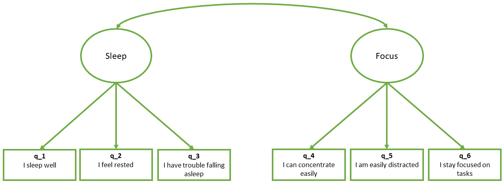

# step 1: specify model
mymodel <- "
....
....
....
"
# step 2: estimate model
mymodel_fit <- cfa(mymodel, data = mydata)Fit a Confirmatory Factor Model
The lavaan package
For these sort of models, we’re going to rely heavily on the lavaan (Latent Variable Analysis) package. This is the main package in R for fitting a whole wealth of model types - all of which come under the umbrella term of “Structural Equation Models (SEM)”, and there is a huge scope of what we can do with it.
Fitting models with lavaan
In practice, fitting models in lavaan tends to be a little different from things like lm() and (g)lmer(). Instead of including the model formula inside the fit function (e.g., lm(y ~ x1 + x2, data = df)), we tend to do it in a step-by-step process. This is because as our models become more complex, our formulas can get pretty long!
In lavaan, it is typical to write the model as a character string and then we pass that formula along with the data to the relevant lavaan function such as cfa() or sem(), giving it the formula and the data.
Draw your model
Suppose that we have got people to fill out a questionnaire that includes the “Focus, Concentration and Uninterrupted Sleep (FoCUS)” scale - a set of 6 questions.
The publication of the FoCUS scale tells us that it captures two distinct but correlated factors corresponding to sleep quality (Qs 1-3) and the ability to focus (Qs 4-6).
We draw this model by putting our observed variables (the questions) in squares, and the latent factors in circles, and joining them with the appropriate arrows, as in Figure 1. The arrows go from the factor to the variable, because the factor model is stating that a person’s standing on the “sleep” factor is what drives their responses to questions 1-3 (e.g., if I were to have worse underlying sleep quality, then I would respond lower on those questions). Finally, the two factors are connected by a double-headed arrow, indicating that they are correlated.

Specification
Operators in lavaan
One new thing to get to grips with is the set of operators which lavaan allows us to use. Up to now, the models we have seen have been regression models, typically specified using the ~ symbol in the format of outcome ~ predictors.
In lavaan, the ~ symbol does just the same thing, but we but we can also specify the construction of latent variables using =~ as well as indicating residual variances & covariances using ~~.
| Formula type | Operator | Mnemonic |
|---|---|---|
| latent variable definition | =~ |
“is measured by” |
| regression | ~ |
“is regressed on” |
| (residual) (co)variance | ~~ |
“is correlated with” |
| intercept | ~1 |
“has an intercept” |
| defined parameters | := |
“is defined as” |
(from https://lavaan.ugent.be/tutorial/syntax1.html)
To specify the model displayed in Figure 1, we need to specify each latent factor on its own line. By default, the correlation between factors will be included, but it’s good to include it anyway:
library(lavaan)
mymodel <- "
sleep =~ q_1 + q_2 + q_3
focus =~ q_4 + q_5 + q_6
sleep ~~ focus # included by default
"Estimation
To actually estimate a CFA model, we use the cfa() function, giving it two things: our model specification, and our data.
mydata <- read_csv("https://uoepsy.github.io/data/lv_sleepfocus.csv")
myfittedmodel <- cfa(mymodel,
data = mydata,
std.lv = TRUE)The std.lv = TRUE bit is telling the function that we want the variance of the latent factor(s) to be fixed to 1. If we don’t do this, it will instead fix the first of the loadings to be 1, and then give us an estimate of the variance of the latent factor. This makes interpretation a little more difficult, so we’d recommend keeping the std.lv = TRUE bit in.
Evaluation
Now it comes to actually looking at our fitted model, and asking how well it fits. We can look at two things:
- the estimates of all the different parts of the model (i.e., the factor loadings, the correlation between factors, the residual variances etc),
- the global fit of the model (how well this theorised set of relationships between variables can reproduce the covariance matrix that we actually observe).
Parameter estimates
We can use summary() on a fitted model and it will show us every estimated parameter in the model. It groups these according to whether they are loadings onto latent variables (the factors), covariances, regressions, variances etc.
summary(myfittedmodel)The output of the summary() will show you each estimated parameter in your model (you can think of these as each of the lines in the diagram).
With CFA models, we can have a lot of parameters. Our very simple model of 2 correlated factors each with 3 items (Figure 1), means that we have 13 parameters (6 factor loadings, 6 residual variances, and 1 correlation between factors). That’s a lot to try and interpret. So interpretation often comes down to more overarching questions about the model, such as 1) does the model fit well? (did you have to specify additional paths?) and 2) are the factor loadings “big enough”? Before then moving on to some of the more specific questions about the things you are interested in (e.g., are the two factors significantly correlated?)
Back in EFA, we were working with correlations, not covariances. This meant that we had everything standardised (not just the latent factor, but the items too). It was this that enabled us to square a loading and make statements like “40% of the variance in item1 is accounted for by factor 1”.
To get similar loadings out from CFA, we can ask for std = TRUE, and it will give us an extra couple of columns. It is the Std.all column that is of interest - it is the estimated factor loading if everything (observed variables and unobserved factors) is standardised.
summary(myfittedmodel, std = TRUE)...
...
Latent Variables:
Estimate Std.Err z-value P(>|z|) Std.lv Std.all
sleep =~
q_1 0.741 0.079 9.415 0.000 0.741 0.630
q_2 0.621 0.073 8.485 0.000 0.621 0.519
q_3 -0.627 0.075 -8.403 0.000 -0.627 -0.511
focus =~
q_4 0.890 0.083 10.730 0.000 0.890 0.647
q_5 -0.629 0.066 -9.514 0.000 -0.629 -0.535
q_6 0.750 0.074 10.196 0.000 0.750 0.594
Covariances:
Estimate Std.Err z-value P(>|z|) Std.lv Std.all
sleep ~~
focus -0.239 0.072 -3.302 0.001 -0.239 -0.239
Variances:
Estimate Std.Err z-value P(>|z|) Std.lv Std.all
.q_1 0.834 0.107 7.772 0.000 0.834 0.603
.q_2 1.045 0.094 11.132 0.000 1.045 0.730
.q_3 1.111 0.098 11.362 0.000 1.111 0.739
... ... ... ... ... ... ...
... ... ... ... ... ... ...We can also get out these, along with p-values and confidence intervals for the standardised estimates, by using:
standardizedsolution(myfittedmodel) lhs op rhs est.std se z pvalue ci.lower ci.upper
1 sleep =~ q_1 0.630 0.060 10.50 0.000 0.512 0.748
2 sleep =~ q_2 0.519 0.056 9.35 0.000 0.410 0.628
3 sleep =~ q_3 -0.511 0.055 -9.25 0.000 -0.619 -0.403
4 focus =~ q_4 0.647 0.052 12.38 0.000 0.545 0.749
. ... .. ... ... ... ... ... ... ...
. ... .. ... ... ... ... ... ... ...Measures of global fit
In R, we can ask for fit measures in a number of ways:
We can ask for them to be added to the
summary()output by usingsummary(myfittedmodel, fit.measures = TRUE). The output gets pretty long, so we won’t print it here.We can use the
fitmeasures()function, by just giving it our fitted model object:fitmeasures(myfittedmodel). Even this gives us a lot of information - there are hundreds of different measures of “model fit” that people have developed, and it lists lots of them. Often, it is therefore easier to just index the specific ones we want:
In this case, our fitted model meets the conventional criteria for “good fit”, because SRMR and RMSEA are both <.05, and CFI and TLI are both >.95.
fitmeasures(myfittedmodel)[c("srmr","rmsea","cfi","tli")] srmr rmsea cfi tli
0.0284 0.0190 0.9952 0.9909
Rabbit Hole: Re-Specification
The modindices() function takes a fitted model object from lavaan and provides a table of all the possible additional parameters we could estimate.
The output is a table, which we can ask to be sorted according to the mi (“modification index”) column using sort = TRUE.
modindices(myfittedmodel, sort = TRUE) lhs op rhs mi epc sepc.lv sepc.all sepc.nox
17 sleep =~ q_5 6.575 0.183 0.183 0.156 0.156
35 q_4 ~~ q_6 6.575 0.768 0.768 0.721 0.721
34 q_4 ~~ q_5 2.147 0.338 0.338 0.325 0.325
18 sleep =~ q_6 2.147 0.115 0.115 0.091 0.091
25 q_1 ~~ q_5 1.939 0.073 0.073 0.081 0.081
. .... ... ... ... ... ... ...The columns show:
lhs,op,rhs: the specific parameter we might include, in lavaan syntax. Soq_4 ~~ q_6is for the inclusion of a covariance between Question 4 and Question 6, andsleep =~ q_5is for the possible inclusion of Question 5 being loaded on to the latent “Sleep” variable, and so on.mi: “modification index” = the change in the model \(\chi^2\) value if we were to include this parameter in the model
epc: “expected parameter change” = the estimated value that the parameter would take if it were to be included in the model
sepc.lv,sepc.all,sepc.nox: these provide theepcvalues but scaled to when a) the latent variables are standardised, b) all variables are standardised, and c) all except exogenous observed variables are standardised (not relevant for CFA)
Often, the sepc.allis a useful column to look at, because it shows the proposed parameter estimate in a standardised metric. For example, if the operator is ~~, then the sepc.all value is a correlation, and so we can consider anything <.2/.3ish to be quite small. If op is =~, then the sepc.all value is a standardised factor loading, so values >.3 or >.4 are worth thinking about, and so on.
model modifications are exploratory!!
We could simply keep adding the suggested parameters to our model and we will eventually end up with a perfectly fitting model.
But the goal isn’t a perfectly fitting model—it’s a theoretically reasonable one.
It’s very important to think critically here about why such modifications may be necessary.
- The initial model may have failed to capture the complexity of the underlying relationships among variables. For instance, suggested residual covariances, which represent unexplained covariation among observed variables, may indicate that the original model was misspecified.
- The structure of the construct is genuinely different in your population from the initial population with which the scale was developed (this could be a research question in and of itself - i.e. does the structure of “anxiety” differ as people age, or differ between cultures?)
Modifications to a CFA model should be made judiciously, with careful consideration of theory as well as quantitative metrics. The goal is to develop a model that accurately represents the underlying structure of the data while maintaining theoretical coherence and generalizability.